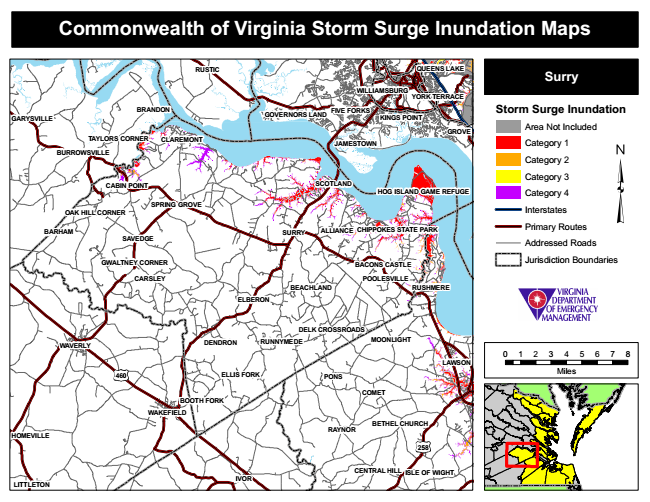

Commonwealth of Virginia Storm Surge Inundation Maps
RUSTIC
QUEENS LAKE
Surry
Storm Surge Inundation
Area Not Included
Category 1
Category 2
Category 3
Category 4
Interstates
Primary Routes
Addressed Roads
Jurisdiction Boundaries
POOLESVILLE
0 1 2 3 4 5 6 7 8
Miles
RAYNOR
WILLIAMSBURG
SPRING GROVE
CENTRAL HILL
YORK TERRACE
BRANDON
FIVE FORKS
SCOTLAND
RUSHMERE
ELLIS FORK
BOOTH FORK
GOVERNORS LAND
OAK HILL CORNER
GWALTNEY CORNER
DELK CROSSROADS
KINGS POINT
CABIN POINT
GARYSVILLE
GROVE TAYLORS CORNER
CLAREMONT
JAMESTOWN
BEACHLAND
COMET
HOMEVILLE
BURROWSVILLE
HOG ISLAND GAME REFUGE
BARHAM
SAVEDGE
SURRY
ALLIANCE
CHIPPOKES STATE PARK
BACONS CASTLE
CARSLEY
ELBERON
WAVERLY
DENDRON
MOONLIGHT
WAKEFIELD
258
ISLE OF WIGHT
LITTLETON
RUNNYMEDE
LAWSON
460
PONS
IVOR
BETHEL CHURCH